前言
关于Service Mesh和API Gateway之间的关系，这个问题过去两年间经常被问起，社区也有不少文章和资料给出解答。其中不乏 Christian Posta 这样的网红给出过深度介绍。我在这里做一个资料的整理和汇总，结合个人的理解给出一些看法。另外在本文最后，介绍蚂蚁金服在Service Mesh和API Gateway融合的这个最新领域的一些开创性的实践和探索，希望给大家一个更有体感的认知。
备注1：为了节约篇幅，我们将直奔主题，假定读者对Service Mesh和API Gateway已有基本的了解。
备注2: 这边文章更关注于梳理整个脉络，内容不会展开的特别细，尤其是其他文章已经详细阐述的部分。如果您在浏览本文之后，还想更深入的了解细节，请继续阅读文章最后的参考资料和推荐阅读。
原本清晰的界限：定位和职责
首先，Service Mesh和API Gateway在功能定位和承担的职责上有非常清晰的界限：
- Service Mesh：微服务的网络通信基础设施，负责（系统内部的）服务间的通讯
- API Gateway： 负责将服务以API的形式暴露（给系统外部），以实现业务功能
如上图所示：
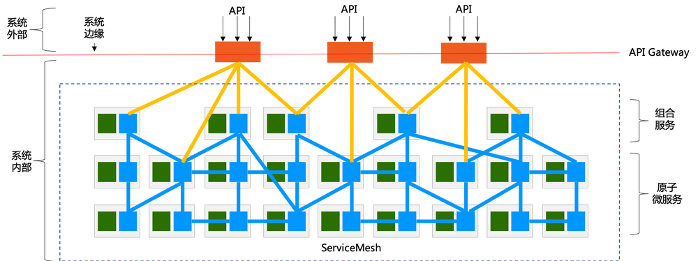
从功能和职责上说：
- 位于最底层的是拆分好的原子微服务，以服务的形式提供各种能力
- 在原子微服务上是（可选的）组合服务，某些场景下需要将若干微服务的能力组合起来形成新的服务
- 原子微服务和组合服务部署于 系统内部，在采用Service Mesh的情况下，由Service Mesh提供服务间通讯的能力
- API Gateway用于将系统内部的这些服务暴露给 系统外部，以API的形式接受外部请求。
从部署上说：
- Service Mesh部署在系统内部：因为原子微服务和组合服务通常不会直接暴露给外部系统
- API Gateway部署在系统的边缘：一方面暴露在系统之外，对外提供API供外部系统访问；一方面部署在系统内部，以访问内部的各种服务。
在这里引入两个使用非常广泛的术语：
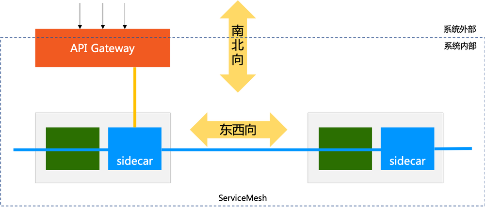
- 东西向通讯：指服务间的相互访问，其通讯流量在服务间流转，流量都位于系统内部
- 南北向通讯：指服务对外部提供访问，通常是通过API Gateway提供的API对外部暴露，其通讯流量是从系统外部进入系统内部。
解释一下“东西南北”的由来：如上图所示，通常在地图上习惯性的遵循“上北下南，左东右西”的原则。
总结：Service Mesh和API Gateway在功能和职责上分工明确，界限清晰。但如果事情就这么结束，也就不会出现Service Mesh和API Gateway关系的讨论了，自然也不会有本文。
问题的根源在哪里？
强烈推荐阅读：附录中 Christian Posta 的文章 “Do I Need an API Gateway if I Use a Service Mesh?“对此有深度分析和讲解。
哲学问题：网关访问内部服务，算东西向还是南北向？
如下图所示，图中黄色的线条表示的是API Gateway访问内部服务：
问题来了，从流量走向看：这是外部流量进入系统后，开始访问对外暴露的服务，应该属于“南北向”通讯，典型如上图的画法。但从另外一个角度，如果我们将 API Gateway 逻辑上拆分为两个部分，先忽略对外暴露的部分，单独只看 API Gateway 访问内部服务的部分，这时可以视 API Gateway 为一个普通的客户端服务，它和内部服务的通讯更像是“东西向”通讯：
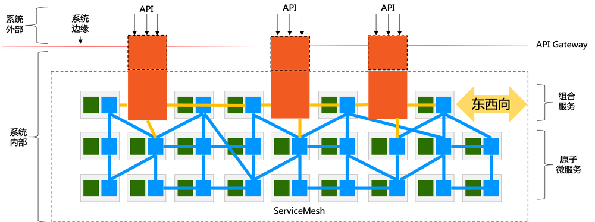
所以，API Gateway 作为一个客户端访问内部服务时，到底算南北向还是东西向，就成为一个哲学问题：完全取决于我们如何看待 API Gateway ，是作为一个整体，还是逻辑上分拆为对内对外两个部分。
这个哲学问题并非无厘头，在 API Gateway 的各种产品中，关于如何实现 “API Gateway 作为一个客户端访问内部服务” ，就通常分成两个流派：
- 泾渭分明：视 API Gateway 和内部服务为两个独立事物，API Gateway访问内部服务的通讯机制自行实现，独立于服务间通讯的机制
- 兼容并济：视 API Gateway 为一个普通的内部服务的客户端，重用其内部服务间通讯的机制。
而最终决策通常也和产品的定位有关：如果希望维持 API Gateway 的独立产品定位，希望可以在不同的服务间通讯方案下都可以使用，则通常选择前者，典型如kong；如果和服务间通讯方案有非常深的渊源，则通常选择后者，典型如springcloud生态下的zuul和springcloud gateway。
但无论选择哪个流派，都改变不了一个事实，当 “API Gateway 作为一个客户端访问内部服务” 时，它的确和一个普通内部服务作为客户端去访问其他服务没有本质差异：服务发现，负载均衡，流量路由，熔断，限流，服务降级，故障注入，日志，监控，链路追踪，访问控制，加密，身份认证…… 当我们把网关访问内部服务的功能一一列出来时，发现几乎所有的这些功能都是和服务间调用重复。
这也就造成了一个普遍现象：如果已有一个成熟的服务间通讯框架，再去考虑实现API Gateway，重用这些重复的能力就成为自然而然的选择。典型如前面提到的 springcloud 生态下的 zuul 以及后面开发的 springcloud gateway，就是以重用类库的方式实现了这些能力的重用。
这里又是一个类似的哲学问题：当 “API Gateway 作为一个客户端访问内部服务” 时，它以重用类库的方式实现了代码级别的能力重用，相当于自行实现了一个和普通服务间通讯方案完全一样的客户端，那这个“客户端”发出来的流量算东西向还是南北向？
答案不重要。
Sidecar：真正的重合点
在进入Service Mesh时代之后，Service Mesh和API gateway 的关系开始是这样：
- 功能和职责清晰划分
- 客户端访问服务的功能高度重叠
此时两者的关系很清晰，而且由于当时Service Mesh和API Gateway是不同的产品，两者的重合点只是在功能上。
而随着时间的推移，当 Service Mesh 产品和 API Gateway 产品开始出现相互渗透时，两者的关系就开始变得暧昧。
在Service Mesh出现之后，如何为基于Service Mesh的服务选择合适的API Gateway方案，就慢慢开始提上日程，而其中选择重用Service Mesh的能力也自然成为一个探索的方向，并逐步出现新式API Gateway产品，其想法很直接：
如何融合东西向和南北向的通讯方案？
其中的一个做法就是基于Service Mesh的Sidecar来实现API Gateway，从而在南北向通讯中引入Service Mesh这种东西向通讯的方案。这里我们不展开细节，我这里援引一个图片（鸣谢赵化冰同学）来解释这个方案的思路：
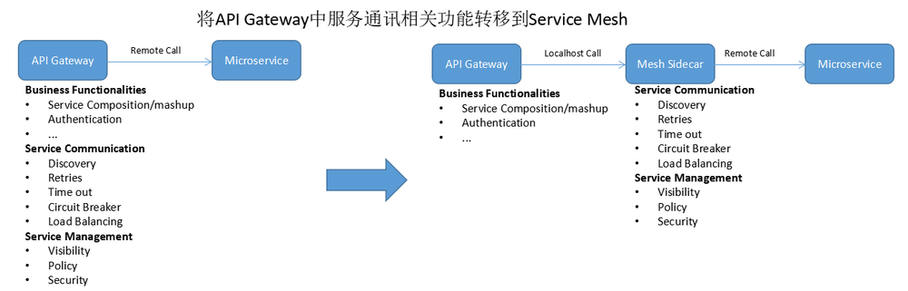
这个时候Service Mesh和API Gateway的关系就变得有意思了，因为Service Mesh中sidecar的引入，所以前面的“哲学问题”又有了一个新的解法：API Gateway这次真的可以分拆为两个独立部署的物理实体，而不是逻辑上的两个部分：
- API Gateway本体：实现API Gateway除了访问内部服务之外的功能
- Sidecar：按照Service Mesh的标准做法， 我们视API Gateway为一个部署于Service Mesh中的普通服务，为这个服务1:1的部署sidecar
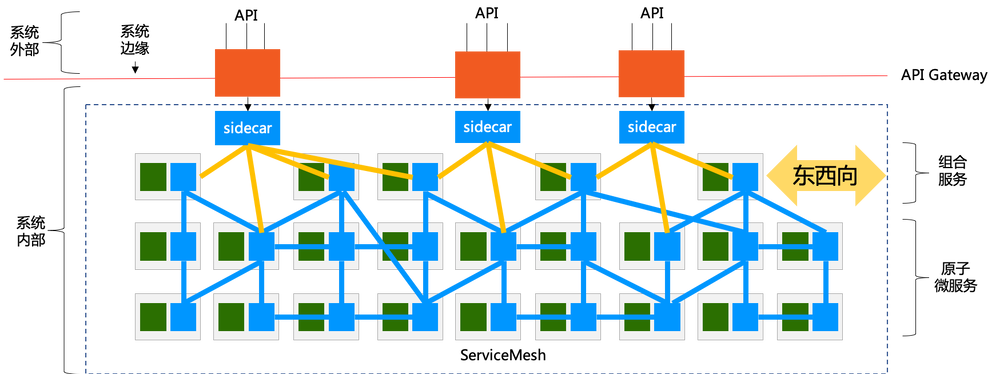
在这个方案中，原来用于Service Mesh的sidecar，被用在了API Gateway中，替代了API Gateway中原有的客户端访问的各种功能。这个方案让API Gateway的实现简化了很多，也实现了东西向和南北向通讯能力的重用和融合，而 API Gateway可以更专注于 “API Management” 的核心功能。
此时 Service Mesh 和 API Gateway 的关系就从“泾渭分明”变成了“兼容并济”。
而采用这个方案的公司，通常都是先有Service Mesh产品，再基于Service Mesh产品规划（或者重新规划）API Gateway方案，典型如蚂蚁金服的SOFA Gateway产品是基于MOSN，而社区开源产品Ambassador和Gloo都是基于Envoy。
上述方案的优势在于API Gateway和Sidecar独立部署，职责明确，架构清晰。但是，和Service Mesh使用sidecar被质疑多一跳会造成性能开销影响效率一样，API Gateway使用Sidecar也被同样的质疑：多了一跳……
解决“多一跳”问题的方法简单而粗暴，基于sidecar，将API Gateway的功能加进来。这样API Gateway本体和Sidecar再次合二为一：
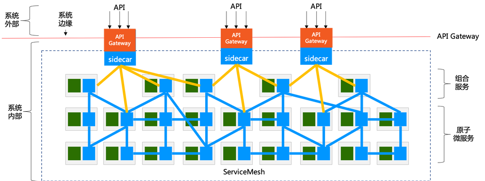
至于走到这一步之后，Service Mesh和API Gateway是什么关系：这到底算是Service Mesh/sidecar融合了API Gateway，还是API Gateway融合了Service Mesh/Sidecar？这个问题就像斑马到底是白底黑纹还是黑底白纹一样，见仁见智。
BFF：把融合进行到底
BFF（Backend For Frontend）的引入会让Service Mesh和API Gateway走到一个更加亲密的地步。
先来看看常规的BFF的玩法：
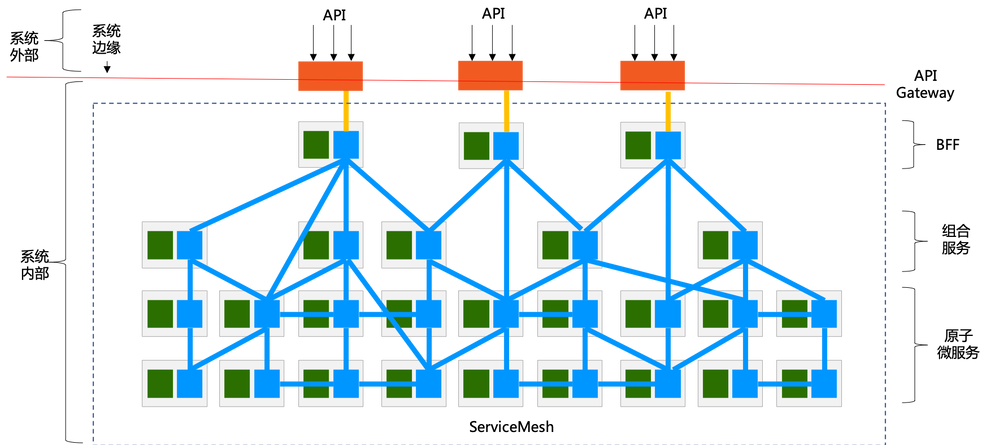
在这里，多增加了一个 BFF 层，介于API Gateway和内部服务（包括组合服务和原子微服务）之间。注意BFF的工作模式和组合服务很类似，都是组合多个服务。但差别在于：
- 组合服务还属于服务的范畴，只是实现机制上组合了多个服务，对外暴露的依然是一个完整和规范的服务
- BFF不同，BFF如名字所示，Backend For Frontend，完全是为了前端而存在，核心目标之一是简化前端的访问
- 对我们今天的话题而言，最关键的一点：BFF完全收口了从外部进入的流量，而组合服务没有，API Gateway是可以直接访问原子微服务的
“BFF完全收口外部流量”，这一点在API Gateway和Sidecar融合之后，会变得很有想象空间，我们先看按照前面的融合方式，在有BFF的情况下，API Gateway和Sidecar融合后的情景：
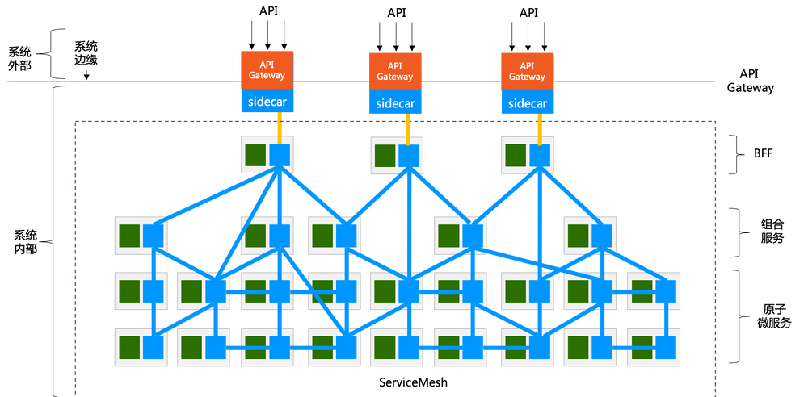
放大一点，单独看API Gateway和BFF：
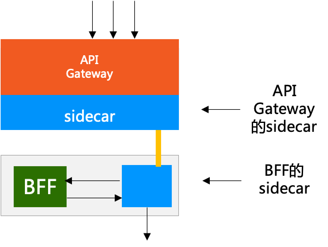
注意到，流量从被API Gateway接收，到进入BFF在这个流程中，这个请求路径中有两个sidecar：
- 和BFF部署在一起的，是没有API Gateway功能的普通Sidecar
- API Gateway和Sidecar融合之后，这就是一个“有API Gateway功能的大Sidecar”（或者是“有Sidecar功能的特殊API Gateway”）：虽然扮演了API Gateway的角色，但本质上依然包含一个完整功能的sidecar，和BFF自带的Sidecar是等同的
所以，问题来了：为什么要放两个sidecar在流程中，缩减到一个会怎么样？我们尝试将两个Sidecar合二为一，去掉BFF自带的Sidecar，直接把扮演API Gateway的sidecar给BFF用：
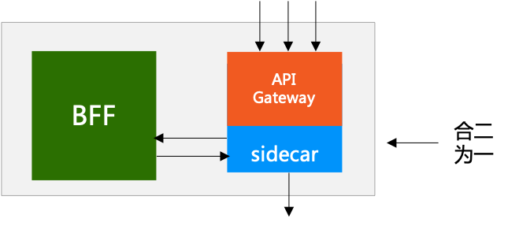
此时的场景是这样：
- 流量直接打到BFF上（BFF前面可能会挂其他的网络组件提供负载均衡等功能）
- BFF的sidecar接收流量，完成API Gateway的功能，然后将流量转给BFF
- BFF通过sidecar调用内部服务（和没有合并时一致）
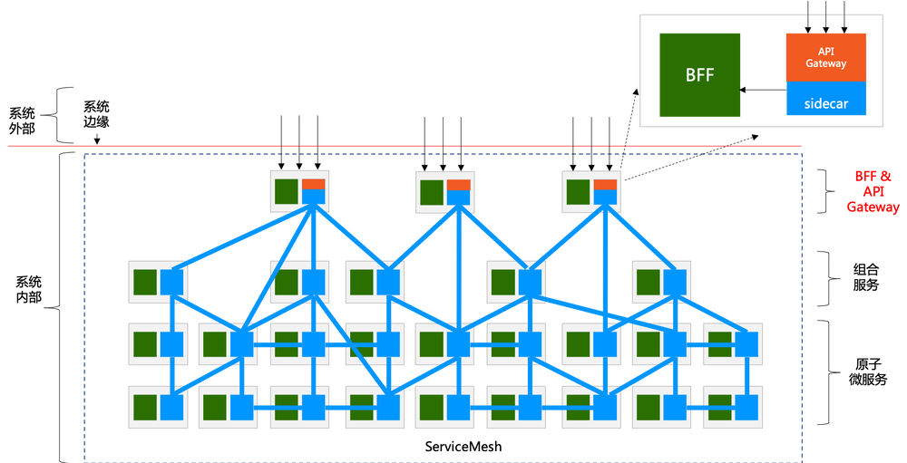
注意这里有一个关键点，在前面时特意注明的：“BFF完全收口外部流量”。这是前提条件，因为原有的API Gateway集群已经不再存在，如果BFF没能收口全部流量，则这些未能收口的流量会找不到API Gateway。当然，如果愿意稍微麻烦一点，在部署时清晰的划定需要暴露给外界的服务，直接在这些服务上部署带API Gateway功能的Sidecar，也是可行的，只是管理上会比BFF模式要复杂一些。
另外，在部署上，按照上面的方案，我们会发现：API Gateway“消失”了 —— 不再有一个明确物理部署的API Gateway的集群，常规的中心化的网关在这个方案中被融合到每一个BFF的实例中，从而实现另外一个重要特性：去中心化。
上述Service Mesh 和 API Gateway融合的方案，并未停留在纸面上。
在蚂蚁金服内部，我们基于Service Mesh 和 API Gateway融合 + 去中心化的思路，进行过开创性的实践和探索。以支付宝移动网关为例，在过去十年间，网关经历了从单体到微服务，从中心化到去中心化，从共享的 gateway.jar 包到利用MOSN实现网关Mesh化/Sidecar化，最终演变成了这样一个方案：
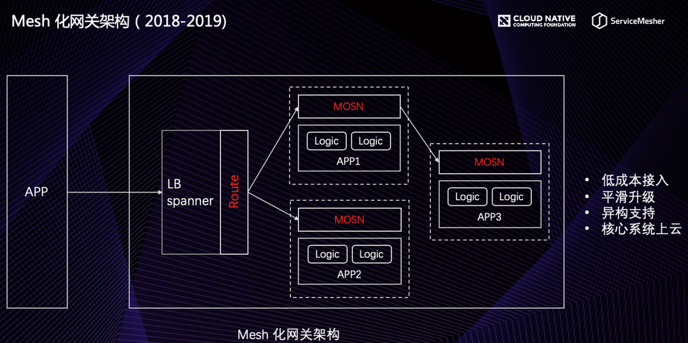
强烈推荐阅读：附录中我的同事贾岛的文章 “蚂蚁金服 API Gateway Mesh 思考与实践” 对此有深入介绍和详细描述。
总结
本文总结了 Service Mesh 和 API Gateway 的关系，整体上说两者的定位和职责“泾渭分明”，但在具体实现上，开始出现融合的趋势：早期传统方式是类库级别的代码复用，最新趋势是API Gateway和Sidecar 合二为一。
后者的发展才刚刚起步，包括在蚂蚁金服我们也是才开始探索这个方向，但是相信在未来一两年间，社区可能会有更多的类似产品形态出现。
补充介绍一下文中多次提到的“MOSN”：
MOSN 是 MOSN 是 Modular Open Smart Network 的简称， 是一款使用 Go 语言开发的网络代理软件，由蚂蚁金服开源并经过几十万容器的生产级验证。 MOSN 作为云原生的网络数据平面，旨在为服务提供多协议、模块化、智能化、安全的代理能力。 MOSN 可以与任何支持 xDS API 的 Service Mesh 集成，亦可以作为独立的四、七层负载均衡，API Gateway、云原生 Ingress 等使用。
- GitHub：https://github.com/mosn/mosn
- 官网：https://mosn.io
附录：参考资料和推荐阅读
意犹未尽的同学，欢迎继续阅读以下内容。
按文章发表的时间排序：
- The Difference Between API Gateways and Service Mesh： 2020-02，指导架构师确定何时使用API网关以及何时使用服务网格，作者Marco Palladino，来自kong。
- Do I Need an API Gateway if I Use a Service Mesh?：2020-01，作者 Christian Posta，中文翻译版本请见马若飞同学的 使用了 Service Mesh 后我还需要 API 网关吗，对 Service Mesh 技术和 API 网关的对比，着重分析了两者的功能重合点和分歧点，为技术选型和落地提供了指导思路。
- 蚂蚁金服 API Gateway Mesh 思考与实践: 2019-12，作者贾岛，介绍蚂蚁金服支付宝网关的发展和API Gateway Mesh的由来，强烈推荐阅读，这个文章非常清晰的介绍了蚂蚁金服在Service Mesh和API Gateway融合方面的实践。
- API Gateway的身份认同危机: 2019-05, 原文作者 Christian Posta，译者周雨青，讲述API Gateway的基本理念如API的定义，API Management的含义，API Gateway模式，以及服务网格和API Gateway的关系。
- 长路漫漫踏歌而行：蚂蚁金服Service Mesh实践探索：2018-10，我在QCon的演讲，我分享了当时蚂蚁金服在服务间通讯范围的探索，提出将服务网格在东西向通讯中的能力重用到南北向通讯中，当时基于Sidecar的SOFA Gateway产品刚开始开发。
- API Gateway vs Service Mesh: 2018-09，作者Richard Li，Datawire的CEO ，在开发 Ambassador API Gateway。Ambassador 是基于 Envoy 的API Gateway开源产品，文章阐述了对服务网格和API Gateway的看法，差异，以及对两者集成的看法。
- DreamMesh抛砖引玉(9)-API Gateway：2018-03，这个文章也是我写的，2018年初我和Service Mesh社区的一些朋友深入探讨之后，在DreamMesh系列博客文章中记录下了当时构想的方案，尤其对 API gateway和sidecar是分是合有详细讨论。当时想法还不够成熟，但大体方向已经有雏形了。鸣谢当时参与讨论的同学！
- Service Mesh vs API Gateway: 2017-10，原文作者 Kasun Indrasiri，以及 赵化冰同学翻译的中文版本，文章不长，主要对比了服务网格和API Gateway的产品功能，提出了两者融合的方式——在API Gateway中通过服务网格来调用下游服务。
- Application Network Functions With ESBs, API Management, and Now.. Service Mesh?：2017-08，作者 Christian Posta，讲述服务网格与ESB，消息代理和API管理之类的事物的关系。内容非常好，强烈推荐阅读（我不得不吐糟一下：配图太辣眼睛）。